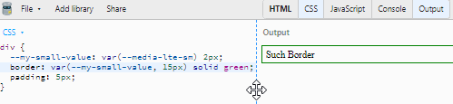

#css-media-vars Documentation & Demos
css-media-vars
A brand new way to write responsive CSS. Named breakpoints, DRY selectors, no scripts, no builds, vanilla CSS.
#Installing css-media-vars
Install with NPM:
$ npm install css-media-vars
Then include the /node_modules/css-media-vars/css-media-vars.css file once, before any stylesheets that use it.
OR
Use your favorite NPM CDN and include it on your page before other stylesheets for small projects. Like so:
<link rel="stylesheet" type="text/css" href="https://unpkg.com/css-media-vars/css-media-vars.css">
#Basics of css-media-vars
css-media-vars adds several --custom-css-variables, all namespaced with "--media-" and based on media queries, onto the HTML tag. These vars act as universal mixins for your CSS values. If the media query is true, your value will be used. If it's false, the var(..., fallback) will be used.
For example, there are several named breakpoints that respond to the width of the screen, such as --media-lte-sm.
In your CSS, if you want a value to only apply when the screen is less than or equal to the "small" breakpoint range, you mix it into your value:
--my-small-value: var(--media-lte-sm) 2px;
From this point, you can use your variable anywhere and it will only be "2px" if the media query is true. Else, it uses the fallback you provide, like so:
border: var(--my-small-value, 15px) solid green;

Here's a link to the jsbin pictured in the gif: https://jsbin.com/giqedowale/edit?css,output
If you need multiple break points, all you have to do is mix a different breakpoint into another variable and use it in the first fallback:
--my-small-value: var(--media-lte-sm) 2px;
--my-medium-value: var(--media-md) 15px;
border: var(--my-small-value, var(--my-medium-value, 30px)) solid green;
In this case, because the small values are listed first, this approach is mobile-first! CSS Variables don't compile the fallback unless it's used (similar to the expected short-circuting of conditionals in JavaScript).
This is all vanilla CSS. No JS or build step is necessary.
The library is small and built on a CSS trick called "Space Toggle" discovered in the development of augmented-ui. You can read more about Space Toggle in these tweets which contain links to JSBins you can explore further with:
Second Tweet, a simple demo
First Tweet, an advanced demo
Browser support for CSS Variables is currently 94% globally according to caniuse.
Each of the --media-* vars are using the actual media query in CSS to switch them to the "true" state. Browser support depends on the feature but will always behave as if it's "false" if the media query isn't supported in the user's browser, such as --media-prefers-light which only recently gained traction.
#Named Breakpoints in css-media-vars
Available Breakpoints
xs = 0px to 600px, (0em+)
sm = 600px to 900px, (37.5em+)
md = 900px to 1200px, (56.25em+)
lg = 1200px to 1800px, (75em+)
xl = 1800px and up, (112.5em+)
Why these breakpoints? https://www.freecodecamp.org/news/the-100-correct-way-to-do-css-breakpoints-88d6a5ba1862/
Why are they implemented as em units? https://zellwk.com/blog/media-query-units/
Media vars available for these breakpoints:
--media-xs (only extra small)
--media-sm (only small)
--media-md (only medium)
--media-lg (only large)
--media-xl (only extra large)
gte (greater than or equal)
--media-gte-sm (small and up)
--media-gte-md (medium and up)
--media-gte-lg (large and up)
lte (less than or equal)
--media-lte-sm (small and down)
--media-lte-md (medium and down)
--media-lte-lg (large and down)
sets
--media-sm-md (small and medium only)
--media-sm-md-lg (small, medium, and large only)
--media-md-lg (medium and large only)
Breakpoint Demo
.breakpoints-demo
Follow
me
on
Twitter
@James0x57
#Print, Screen, and Speech
--media-print
--media-screen
--media-speech
.media-print-demo:
Preview Print!
#Other Implemented Media Vars
--media-landscape
--media-portrait
--media-prefers-light
--media-prefers-dark
--media-prefers-reduced-motion
--media-any-hover-hover
--media-any-hover-none
--media-any-pointer-coarse
--media-any-pointer-fine
--media-any-pointer-none
--media-hover-hover
--media-hover-none
--media-pointer-coarse
--media-pointer-fine
--media-pointer-none
#Combine media queries
combine using AND logic:
--gray-if-prefers-dark-and-is-printing: var(--media-prefers-dark) var(--media-print) gray;
combine using OR logic:
--gray-if-prefers-dark-or-is-printing: var(--media-prefers-dark, var(--media-print)) gray;
If the condition applies to multiple properties, you can create compound conditions and use them in multiple places:
--prefers-dark-and-is-printing: var(--media-prefers-dark) var(--media-print);
--my-query-bg-color: var(--prefers-dark-and-is-printing) gray;
--my-query-border-size: var(--prefers-dark-and-is-printing) 2px;
background: var(--my-query-bg-color, black);
border: var(--my-query-border-size, 10px) solid black;
Feel free to reach out on github or twitter with feedback, requests, or for help getting started!
follow me on twitter for updates and other web stuff